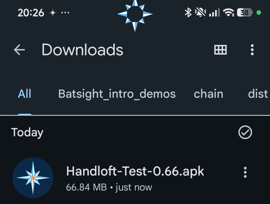
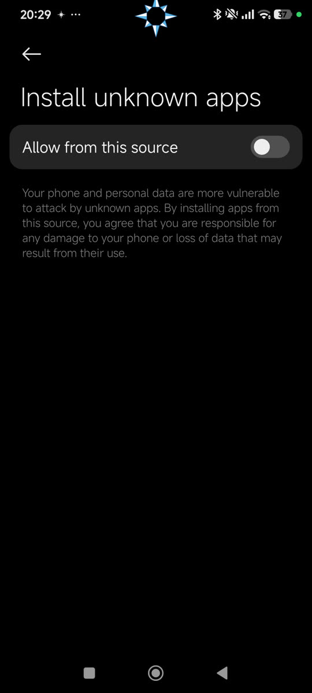

The deal
El trato
- Race on 15 different days. They don't need to be in a row. Any race counts: Grand Prix, practice, racing together.
- Once, send your opinion: TELL US WHAT YOU THINK on the app's Home.
- Corre en 15 días distintos. No tienen que ser seguidos. Cuenta cualquier carrera: Gran Premio, práctica, carreras juntos.
- Una vez, envía tu opinión: TELL US WHAT YOU THINK en el Inicio de la app.
You get: the finished Six Suns GP, yours, free. Home shows your count: Test days.
Recibes: Six Suns GP terminado, tuyo, gratis. El Inicio muestra tu cuenta: Test days.
You need
Necesitas
- An Android phone (no iPhone). For racing in your room, a phone with Google's AR. Without it you race on the screen.
- The Gmail you gave us.
- Your code from WhatsApp, like
SG-7KQ3P.
- Un teléfono Android (no iPhone). Para correr en tu cuarto, un teléfono con la RA de Google. Sin ella corres en la pantalla.
- El Gmail que nos diste.
- Tu código del WhatsApp, como
SG-7KQ3P.
Install
Instala
Tap the button. Drive opens.
Toca el botón. Se abre Drive.
Open the folderAbrir la carpeta"You need access"? Switch to the Gmail you gave us (top right).
¿Dice "Necesitas acceso"? Cambia al Gmail que nos diste (arriba a la derecha).
Next to the file starting with SixSunsGP-Test tap ⋮ › Download.
Junto al archivo que empieza con SixSunsGP-Test toca ⋮ › Descargar.
Open Files › Downloads › tap the file.
Abre Archivos › Descargas › toca el archivo.

"Not allowed to install unknown apps"? Tap Settings › turn on Allow from this source › go back.
¿Dice que no puede instalar apps desconocidas? Toca Configuración › activa Confiar en esta fuente › regresa.

Red "Danger" page (Xiaomi, POCO, Redmi)? Tick the box › wait › OK.
¿Página roja de "Peligro" (Xiaomi, POCO, Redmi)? Marca la casilla › espera › Aceptar.
Tap Install.
Toca Instalar.
"App blocked" by Play Protect? Tap More details › Install anyway. If there is no such button: Play Store › your photo › Play Protect › ⚙ › turn off Scan apps, install, then turn it back on.
¿Play Protect dice "App bloqueada"? Toca Más detalles › Instalar de todas formas. Si no aparece: Play Store › tu foto › Play Protect › ⚙ › desactiva Analizar apps, instala, y vuelve a activarlo.
Tap Open.
Toca Abrir.
Then, in Six Suns GP
Después, en Six Suns GP
Type your code › ENTER › read what the test sends › I AGREE.
Escribe tu código › ENTER › lee lo que envía la prueba › I AGREE.
Tap RACE · GRAND PRIX. The first race asks for the camera: allow it to race in your room.
Toca RACE · GRAND PRIX. La primera carrera pide la cámara: permítela para correr en tu cuarto.
A new version? Home shows NEW VERSION · UPDATE. Tap it. Your Grand Prix stays.
¿Versión nueva? El Inicio muestra NEW VERSION · UPDATE. Tócalo. Tu Gran Premio se queda.
Stuck? Write on WhatsApp to the person who invited you.
¿Atorado? Escribe por WhatsApp a quien te invitó.